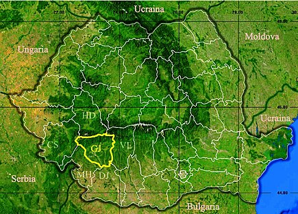

Geografia Gorjului

Județul Gorj este situat în partea sud-vestică a României, pe cursul râului Jiu. Este limitat de județele: Dolj (sud-est), Mehedinți (sud-vest), Caraș-Severin (nord-vest), Hunedoara (nord) și Vâlcea (est). Principalele orașe și municipii sunt Târgu Jiu (reședința de județ), Bumbești-Jiu, Motru, Novaci, Târgu Cărbunești, Țicleni și Rovinari.
Relieful județului Gorj este variat și poate fi împărțit în trei unități fizico-geografice. Acestea sunt: Carpații Meridionali, reprezentați de munții Godeanu, Vâlcan și Parâng, Subcarpații Getici între râurile Motru și Olteț, dealurile sudice care se întind de-a lungul Platoului Getic. Altitudinile oscilează de la 2.518 m în Masivul Parângu Mare la 100 m în Valea Jiului din sudul județului.Teritoriul județul Gorj este bogat în ape subterane cum ar fi apele de carst provenite din bara calcaroasă montană unde s-a făcut și captarea celor două izvoare la Runcu și Izvarna cu un debit de peste 100 litri/secundă fiecare. Ape freatice la adâncimi mici de circa 2–3 m se află în depresiunile subcarpatice și în luncile râurilor din zona de podiș folosită de locuitori prin captări în puțuri. Apele minerale apar la Săcelu în izvoare, folosite pentru băi.
Clima este temperat-continentală moderată cu influențe mediteraneene. Datorită configurației reliefului, clima este diferențiată în funcție de treptele de relief. Temperaturile medii anuale cresc dinspre nord spre sud. Vânturile dominante sunt cele nordice.
Flora și fauna județului sunt variate. Flora se compune din peste 2000 de specii de plante de tip submediteranean, pontic, balcanic și balcano-dacic.
Hidrografia județului este reprezentată de râurile: Jiu, Gilort și afluenții lor, Râurile Olteț și Cerna. Există câteva importante lacuri glaciare: Gâlcescu, Tăuri, Slăveiul, Mija, Pasărea și Godeanu. Lacurile sunt puține și sunt realizate artificial pentru atenuarea viiturilor (Ceauru) sau pentru producerea de energie electrică (Motru, Cerna, Valea lui Ivan).
Gorjul este delimitat la nord de paralela de 45°58' latitudine nordică, ce trece în apropiere de localitatea Țânțăreni. Limita estică se află în apropierea localităților Alimpești și Polovragi, pe lângă trecând meridianul de 23°39' longitudine estică. Limita vestică este reprezentată de vârful Dobru din Munții Godeanu, situat pe meridianul de 22°6' longitudine estică. Paralela de 45° străbate teritoriul județului prin partea de sud a reședinței acestuia.